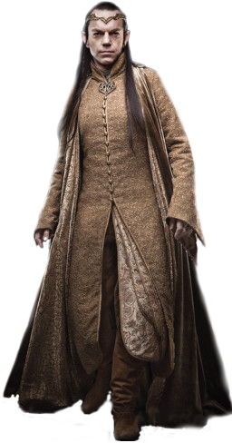

HISTORIA
Elrond
Es medio-elfo (hijo de Elfos y Hombres, también llamados Peredhil) muy fuerte y sabio. Se enfrentó a Sauron en la Guerra del Anillo y luchó en la Guerra de la Última Alianza y en la invasión de Eriador. Es hijo de Eärendil, tiene un hermano llamado Elros quien, a diferencia de él, eligió ser de la raza humana. Elrond se casó con Celebrían y tuvo tres hijos, los gemelos Elladan y Elrohir, y Arwen, llamada Undómiel. Elrond portaba el más grande de los Tres Anillos, Vilya, que recibió de manos de Gil-galad. Se lo conoció como Elrond el Medio Elfo y Señor de Imladris. Físicamente tiene las características de un elfo común, de pelo negro y tez blanca e imperecedera que por un lado se ve joven, pero por otro se ve extraordinariamente sabio, de ojos grises con un claro resplandor estelar.HABILIDADES
Se dice que Elrond era el más sabio entre los Eldar, excepto quizá Galadriel. Era un gran maestro de la ciencia y un poderoso guerrero, que en más de una ocasión se enfrentó a Sauron.
